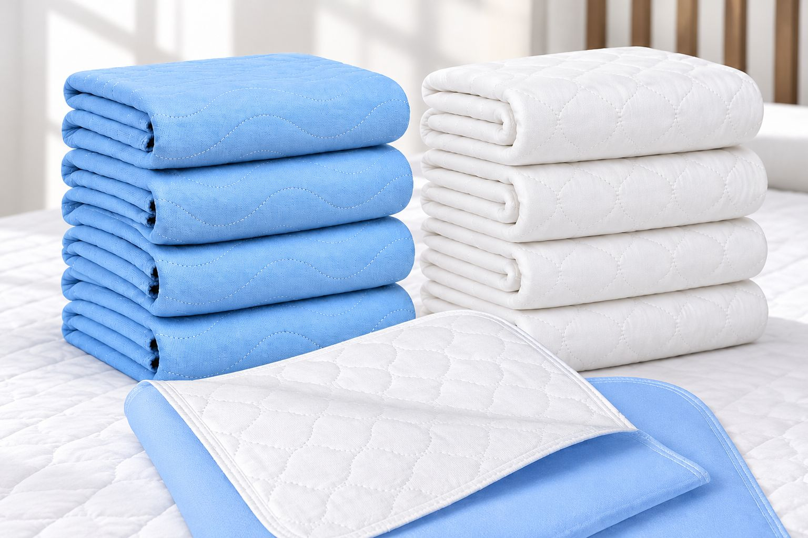
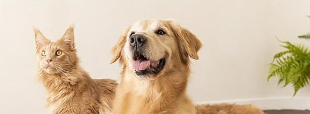
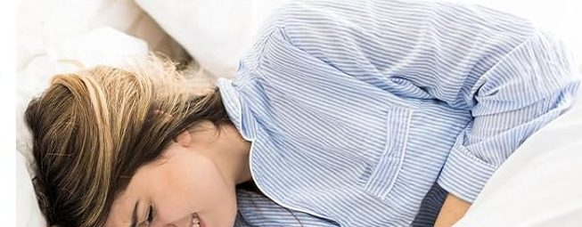

No shifting, no leaks. Peace of mind, day and night.
Why wash and reuse? Because one VELCURA underpad protects five things at once: the skin, the mattress, hygiene, the environment and everyone's sleep. It is used for elderly care, babies and pets, then washed and ready for the next night.

What a washable pad protects
Each promise below is tied to a material, a test or a published figure, not an adjective.
No shifting
Silicone-dot backing grips sheets, sofas and floors, and two 46 × 86 cm (18 × 34 in) tuck-in wings lock the pad under the mattress. Pads come up to 34 × 76 in (86 × 193 cm), head to toe, with larger sizes made to order; disposable chux usually stop at 36 × 36 in and bunch up when the user moves. Shifting is one of the most common complaints in public underpad reviews.
Learn moreNo leaks
The release target is a 100% waterproof pass rate on a hydrostatic test (ISO 811), re-checked after 50, 100 and 300 washes. The core holds about 200 ml (Light) to a 500 ml target (Heavy) per 34 × 36 in pad, so liquid stays in the pad and off the sheet.
Learn moreProtects skin
A soft quilted cotton-blend top wicks moisture away, and a breathable TPU film replaces hot, crinkly vinyl. There are no PVC or phthalate plasticisers, and OEKO-TEX® Standard 100 fabric options are available. Low rewet means less dampness against skin through the night.
Learn moreProtects the mattress
A pad of about $6 guards a mattress that typically costs $600 or more, roughly 1% of its value. One soaking can ruin a mattress, and many mattress warranties are void once it is stained. A pad that does not move or leak is the cheapest insurance in the bedroom.
Learn moreProtects hygiene
Home pads wash at up to 60 °C, and the Care-Pro 95 build withstands 95 °C and thermal-disinfection programmes (for example 71 °C for 3 minutes) used in care facilities. Every use ends in the wash: a closed, controlled hygiene loop.
Learn morePeace of mind, day & night
No rustle, no bunching and no full bed-strip at 3 a.m.: changing a pad takes about two minutes, so the person in bed is barely disturbed and the carer gets back to sleep sooner.
Learn moreOne pad, about 300 fewer disposables in the bin
A disposable underpad is used for a few hours, then thrown away. Its plastic backing and absorbent gel do not break down. Disposable underpads are a $5.14 billion market (2025), which means billions of pads going to landfill and incineration every year. A washable VELCURA pad is rated for 300+ washes, so each one replaces about 300 disposables over its life.
- About 25 kg of waste avoided a year for one nightly user (est. 70 g per used heavy pad)
- A life-cycle study framed 10 reusable pads × 100 washes as equivalent to 1,000 disposables
- PVC-free TPU barrier; recycled-polyester (GRS) fabric and recycled-PE packaging options
- Washing full loads at 40–60 °C and line-drying keep the laundry footprint low

Absorbent on one side, waterproof on the other
Each pad has a soft quilted face for skin and a smooth backing for the mattress. Between them sits a high-loft absorbent core and a laminated TPU membrane. The membrane is liquid-proof and lets vapour through, so it does not rustle or trap heat the way vinyl does.
- Quilted top: cotton/polyester blend, bamboo viscose or polyester knit
- Core: needle-punched absorbent fibre, 200–400 g/m² by grade
- Barrier: TPU laminate (PVC-free, phthalate-free)
- Backing: smooth polyester, or silicone anti-slip dots
One pad, every room in the house, and beyond
From the bedroom of an elderly parent to the nursery, the dog's favourite sofa corner, the car trunk and the campsite.








Shoppers already vote with their carts
Washable underpads are an established, high-rated category on Amazon and in care-aid channels. Figures below are public, third-party estimates.
We studied why buyers return underpads
Public reviews of washable underpads tend to complain about the same handful of things. Each one maps to an engineering choice we control.
| Frequent complaint | Root cause | VELCURA response |
|---|---|---|
| "Leaked after a few washes" | Thin PU coating cracks under heat | Laminated TPU membrane, verified by a hydrostatic test after 50 / 100 / 300 washes |
| "Slides around the bed" | Slippery polyester backing | Silicone-dot anti-slip backing or tuck-in wings |
| "Shrank / smaller than listed" | Unstabilised fabrics | Pre-shrunk fabrics, ≤3% dimensional change target, size tolerance printed on spec |
| "Crinkly and hot" | Vinyl (PVC) barrier | Breathable, quiet TPU; no PVC |
| "Edges frayed, filling bunched" | Wide quilt spacing, weak binding | Dense wave quilting plus a double-stitched bias binding |
| "Pack count wrong" | Packing errors | Weight check on every carton, AQL 2.5 final inspection |
From spec sheet to shelf in five steps
Brief
Market, sizes, grade, target retail price.
Approval
Lab tests and packaging artwork.
Production
Typical 25–35 days, in-line QC.
Ship
FOB / CIF / DDP, FBA-ready cartons.
Buyers often ask
What is the fundamental difference from disposable underpads?
A washable underpad can be machine-washed 300+ times, so its total cost per use is about 73% lower than a disposable pad, including laundry costs. The more fundamental difference is protection: it does not shift and does not leak at the edges, so it keeps the mattress from being soiled or even ruined. That makes the overall value higher still.
How many washes does a VELCURA underpad last?
The standard construction is engineered and tested for 300 home-laundry cycles (ISO 6330 procedure) while retaining waterproofing. Institutional builds rated for 95 °C laundering are available.
What is your MOQ for private label?
Stock colours start from 500 pieces per size. Custom fabrics, colours or printed logos typically start from 1,000 pieces per SKU. Final MOQ is confirmed on your quotation.
Can you supply Amazon FBA-ready packaging?
Yes. We print FNSKU labels, suffocation warnings and carton labels to Amazon specifications, and can ship to FBA warehouses in the US, EU and Japan through your forwarder.

Ready to build your washable underpad line?
Tell us your market, sizes and quantities. We reply with a spec sheet and price ladder within one business day.
*The ≈200 ml (7 oz) figure is the published capacity of a comparable 34×36 in standard-grade pad. The certified capacity for each VELCURA grade is stated on its test report.